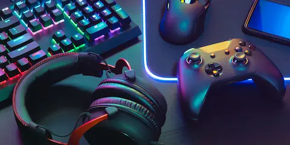

No hace mucho Bethesda sorprendió a todo el mundo con el anuncio de Oblivion Remastered, y ahora la sorpresa se completa: el juego llega a Game Pass Ultimate y PC Game Pass el 16 de abril. Llevaba un tiempo disponible solo para suscriptores de Game Pass Premium, pero a partir de esta semana se abre a la base más amplia del servicio. Para los que ya tienen Ultimate o PC Game Pass, es una incorporación directa sin coste adicional.
Oblivion es uno de esos juegos que definen una época. Lo recuerdo perfectamente: el portal de Oblivion abriéndose por primera vez, el sistema de nivelado roto que nadie entendía del todo, y horas perdidas recorriendo Cyrodiil sin ningún objetivo concreto más allá de explorar. La versión remasterizada mantiene la esencia pero actualiza gráficos, iluminación y rendimiento para que se pueda disfrutar en hardware moderno sin que chirríe demasiado.
Si nunca lo jugaste, esta es probablemente la mejor excusa para hacerlo. Y si ya lo conoces, seguro que hay una quimera o un Daedra por matar que tienes pendiente desde 2006.